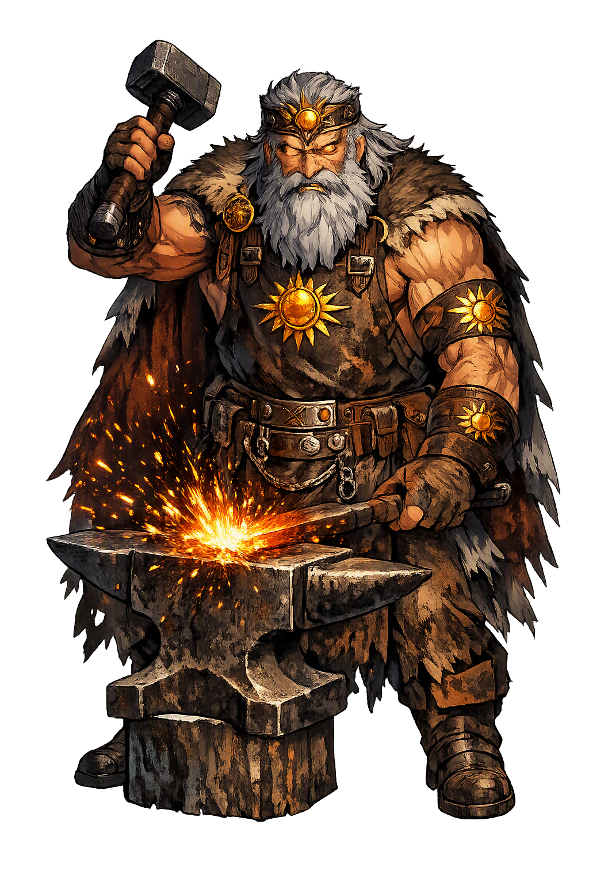

Stories of Svarog
Svarog has no surviving epic and no surviving cult — his entire dossier is a few chronicle lines, a gloss, and a name. The mythology below is therefore an archaeology of attestations: each 'myth' is a document, read as closely as the evidence allows, with the tradition's silence stated plainly.
The earliest notice of Svarog comes not from a pagan shrine but from a court book. The Svyatoslav Izbornik of 1073 — a miscellany compiled for Prince Svyatoslav of Kiev — pauses over the Slavic gods to say: 'There is a god named Svarog', and in the surrounding passage draws the comparison with the smith-god Hephaestus, whose forge was read as an image of heaven's fire. The compiler's source was probably a South Slavic manual translated for Duke Svyatoslav's court, which would make the notice the fossil of a lost Slavic mythographic handbook. The sentence is three words in Old Russian,The sentence is three words in Old Russian, yet it proves that in eleventh-century Rus', a century and a half after official conversion, learned men still needed to name and explain the old sky-smith. The attestation tells us less what Svarog did than how stubbornly he survived — a god preserved in the margin of a Christian book.
The Primary Chronicle (Povest' vremennykh let), in its anti-pagan sermon, records the genealogy plainly: 'from him was born Dažbog' — the Giving God, the sun — a line preserved in the Laurentian and Hypatian codices (Cross & Sherbowitz-Wetzor, trans.). Dažbog in turn gave his name to the Rus' themselves in the chronicler's bitter pun — 'Dažbog's grandchildren,' a folk memory the sermon meant to shame into silence. With it comes the whole logicWith it comes the whole logic of the sky-smith: what a smith fathers is a made light, a produced radiance, and Dažbog's very name ('the giver') reads like the boast of a successful forge. Scholars caution that the chronicler's sermon is polemic, not ethnography. Even so, the fragment preserves a genuine Indo-European intuition in Slavic dress: the sun is not a body but a work — hammered out, handed down, and called a gift.
Writing around 1172, the German priest Helmold of Bosau lists the gods the Slavs revere — and among them, Zuarasici, the form his Latin ear gave to Svarog (Helmold, Chronica Slavorum I.52). The notice is a single name in a hostile catalogue, yet it matters: it places the god west of Kiev, among the Obodrite Slavs of the Baltic coast, suggesting his name once ranged across the whole Slavic world. The same passage gives him neighbors — a storm-hurling chief god and a god of war — so one hostile paragraph sketches the entire Obodrite pantheon. Helmold's list is our only Western-witness checkHelmold's list is our only Western-witness check on the Russian sources. A name without a story, recorded by an enemy, is fragile evidence — but it is evidence, and for a Slavic god that is rare enough to be precious.
In a Novgorod copy of Hilarion's Sermon on Law and Grace, a copyist 'corrected' the text to write Svarožič — 'Little Svarog' — the name scholars take for a fire-god or the domesticated form of the sky-smith (Ivanits, Russian Folk Belief, 1989; Gieysztor, Mitologia Słowian). Later South Slavic and folk materials preserve hearth rites — the fire doused, fed, and addressed with honor — which the scholarship has long connected to this doubled name. South Slavic folklore collected in the nineteenth century still addresses the hearth fire with honorific formulas, and Serbian scholarship has long read in them the memory of a flame that was once a god. The tradition is fragmentary and the reconstruction debated;The tradition is fragmentary and the reconstruction debated; what stands is the shape of the idea: the cosmic smith had a small form that fit inside every house, so that tending the stove was, in origin, tending a god.
Sky
Svarog is the elusive Slavic god of the sky, fire, and smithing — known almost entirely from a handful of early Russian and Western chronicle notices that name him, compare him to a smith, and make him father of the sun. He is the Slavs' heaven-forge: the god at whose anvil the daylight was made.
The Izbornik of 1073 names him beside the forge-god comparison — heaven's smith, working in radiance.
The Primary Chronicle makes him father of Dažbog, the Giving God — the sun as the smith's son.
As Svarožič he descends to the hearth — the divine fire that must be fed and kept pure.
Rare among Slavic gods, he is textually attested — a god pagans and preachers both had to name.
From the original script to the living URL
Svarog
The name survives in scholarly transliteration. Svarog is the standard Slavic romanisation, documented in academic sources — “Bright, clear”. Because the spelling uses only Latin letters, the form is the same in both ASCII and Unicode.
No indigenous writing system is securely attested for individual slavic names. The form shown is a modern scholarly transliteration.
svarog
The plain svarog form is identical to the Unicode restoration. Because this name is already written in Latin letters, no diacritics, stress, or script information were lost — only capitalization differs.
Svarog
The Unicode restoration does not need to recover lost marks for Svarog. Its value is canonical spelling and consistent cataloguing, not the reconstruction of erased orthography. The domain is readable as-is to both DNS and humanity.
Svarog.com
This restoration is written entirely in ASCII letters — no Punycode encoding stands between Svarog and the DNS. The domain reads identically to machines and to human eyes.
Owned, ideal, and ASCII forms of Svarog
Svarog
The full Unicode restoration. svarog.com is not in the PuniCodex collection — it is watched for release; if it drops, this temple upgrades to an owned flagship.
How Svarog was spoken
How Svarog is preserved in writing
No indigenous writing system is securely attested for individual slavic names. The form shown is a modern scholarly transliteration.
Contribute scholarly provenance →Svarog asks what can be known of a god who left almost nothing. The honest answer is: a name, a son, a forge, and a fire. Yet these fragments sketch a complete theology of making. The Slavs looked at daylight and did not call it a lamp or a face — they called it work: something hammered out on an anvil by a craftsman whose son delivers it. In that intuition lies a whole philosophy — that order is manufactured, that radiance is skilled labor, that the sky is a workshop and the sun its product. The hearth-name Svarožič extends the philosophy downward: if the sun is a forge's output, every kitchen fire is a franchise of heaven. A civilization that imagined the cosmos this way honored the smith as its most theologically precise citizen. Svarog survives because the intuition survives: we still speak of 'forging' the future, still feel that making is the most godlike of acts.
Enter Extended Lore